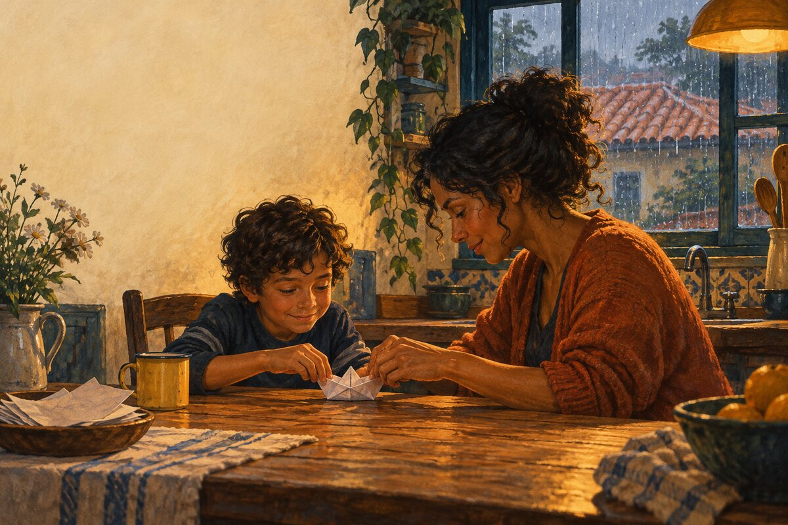

“Ele soltou a bola.
Precisava das duas mãos.”
Anos depois, Tomás não lembraria do jantar. Mas lembraria das mãos da mãe, pacientes com as pontas que ele dobrava errado.
O barco não durou. A tarde ficou.Um presente que já aconteceu.
Aquela lembrança de vocês, transformada em uma história ilustrada para guardar.
PDF personalizado · 6 páginas · R$ 49

Abra uma lembrança.
Um menino queria jogar bola. A chuva tinha outros planos.
Amostra fictícia · criada com IALer a história completa · PDF ↗“Ele soltou a bola.
Precisava das duas mãos.”
Anos depois, Tomás não lembraria do jantar. Mas lembraria das mãos da mãe, pacientes com as pontas que ele dobrava errado.
O barco não durou. A tarde ficou.Qual instante merece ficar?
Você conta. Nós encontramos uma história ali.
O presente
Texto e arte produzidos com IA a partir do seu relato. A ilustração interpreta a cena; não reproduz rostos como uma fotografia.
R$ 49
Quero guardar um instante →Primeiro combinamos a lembrança e o prazo. Depois, o pagamento. Não é uma entrega automática.
Uma pessoa. Uma ocasião. Uma lembrança.
Combinamos os detalhes e o prazo antes de produzir.
Você recebe o PDF e pode pedir uma revisão.
Uma cena, uma viagem ou um hábito de vocês. Use só os detalhes necessários e que tenha autorização para compartilhar. Não precisamos de documentos ou informações sensíveis.
A entrega é digital, em PDF. A impressão não está incluída. Você pode enviar o arquivo como presente ou imprimir por conta própria.
O prazo é combinado por e-mail antes do pagamento, depois de entendermos a lembrança e a disponibilidade de produção. Nenhum pedido é aceito automaticamente.
Este é um experimento criativo da MindKappa, com texto, ilustração e composição produzidos com assistência de IA. A encomenda é acompanhada pelo responsável pelo projeto, e você pode solicitar uma revisão dos detalhes.